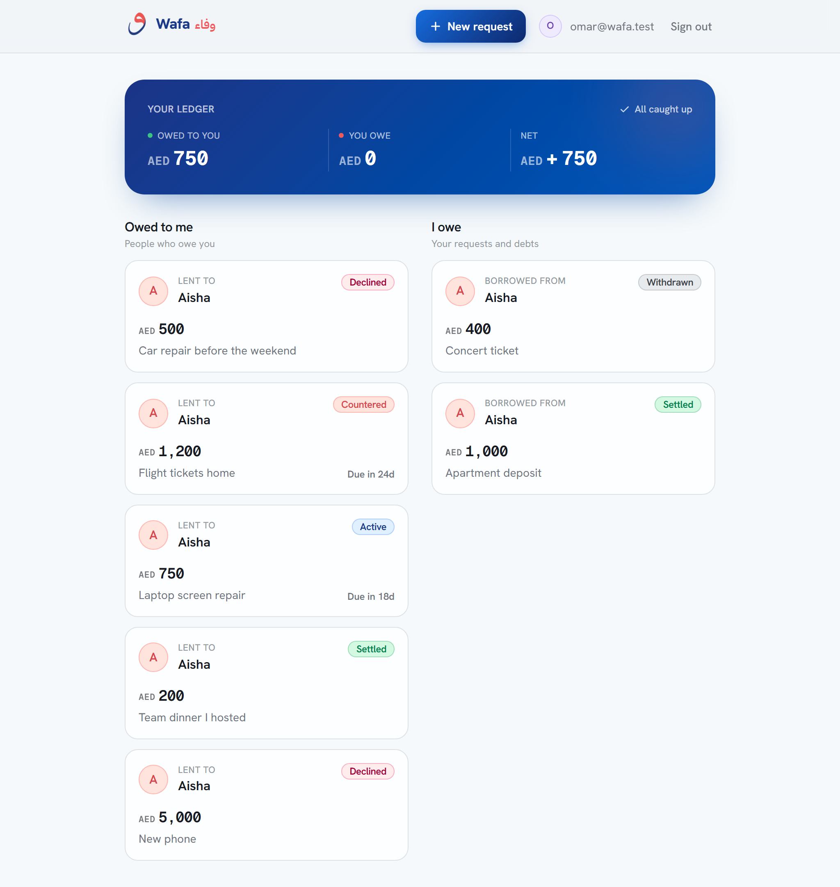
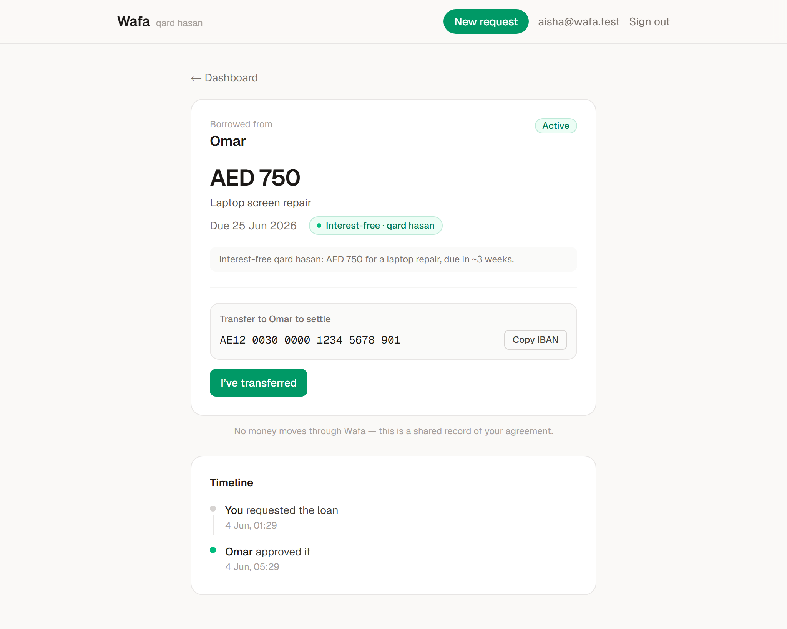
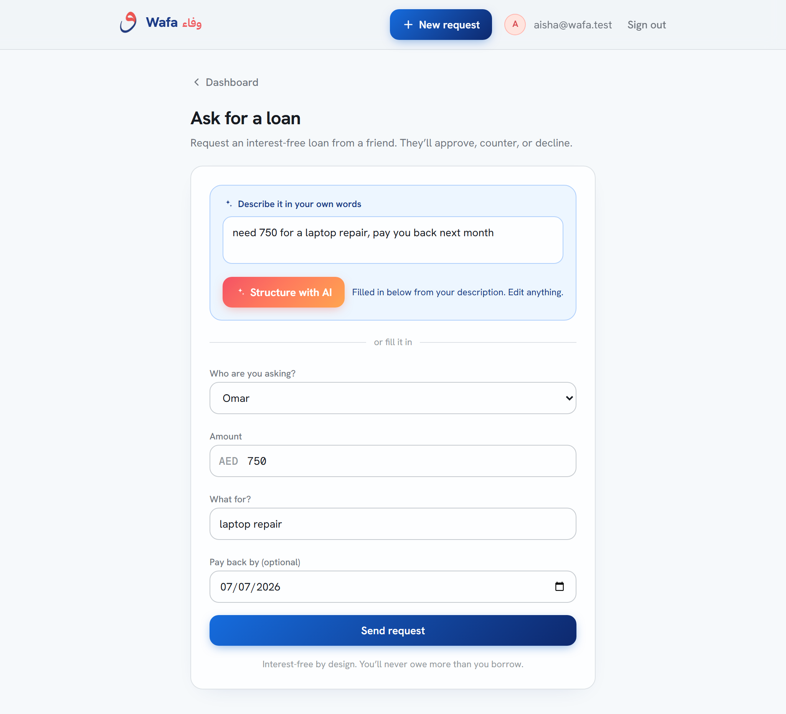
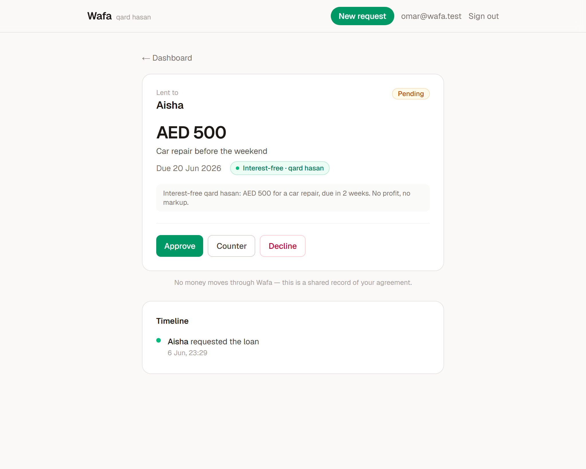
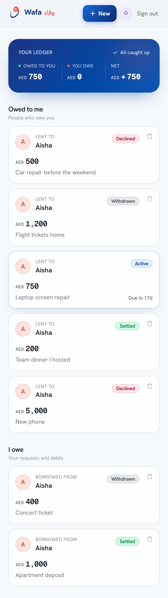

The prompt: companies have no clean way to ask for something that needs approval — it is scattered across email and chat. Build one request → review → decision flow, with a person who requests and a person who approves.
Mal is an AI-native, Sharia-compliant fintech. So I chose an approval flow that is native to that world: a friend requests a goodwill loan, a friend approves, counters, or declines, and it is tracked to repaid. Same primitive, a domain that actually resonates.
Two clear roles, per loan (anyone can be borrower or lender). A real decision with a real counter-offer. A genuine pain — chasing a friend for money is awkward — solved by a written record, not a feature pile.
Wafa records qard hasan — interest-free, goodwill loans between people who already trust each other. It is a faithful, auditable log of an agreement: requested, approved or countered, transferred, repaid, confirmed.
No money moves through Wafa. A deliberate scoping choice that keeps it genuinely shippable and well clear of payments and regulatory scope — while still solving the real pain: the tracking.
There is deliberately no interest or markup column anywhere in the schema. The qard-hasan identity is enforced by absence, not by a setting someone could flip.
Every screen first answers “where does this stand, and is the ball in my court?” Colour carries state, so you read a loan before you decide what to do with it.
Single bounce: the one allowed counter-offer is folded into the row, so a second counter is structurally unreachable. Every transition writes an immutable row to an audit timeline both parties can see.




“Need 400 for a car repair, pay you back in two weeks.” A server-side Claude call turns it into amount / reason / due date, plus a plain-terms interest-free summary, and pre-fills a fully editable form.
Snap a bank document in Settings; the same model reads it into the payment fields — again only pre-filling. The image is used for that one call and never stored.
Deliberately non-blocking. Each route has an 8-second timeout and always returns HTTP 200 — a slow, missing, or erroring model never blocks anything. The UI simply falls back to the manual form. Claude Haiku 4.5, via OpenRouter, server-side only.
App Router, TypeScript, React Server Components + Server Actions. Every route paints an on-brand skeleton the instant it is clicked.
Postgres, Auth, and Row-Level Security. Seven migrations, a seed across every status, and an in-DB test harness.
Claude Haiku 4.5 via OpenRouter for the two light AI touches. The app itself was built with Claude Code.
Tailwind CSS v4 with OKLCH tokens · three typefaces, each with a job (Hanken Grotesk, IBM Plex Sans Arabic, Geist Mono) · reduced-motion-safe throughout · mobile-first, excellent at 390px.
Standalone scripts for auth + RLS + IBAN protection, the full lifecycle over PostgREST, the AI structuring, and a Playwright drive-through that doubles as the screenshot generator.
Deep-blue + coral brand DNA, with joyful accents (teal, amber, violet, mint) spent in committed colour moments — a gradient ledger band, mesh hero, gradient CTAs — never spread evenly.
Geist Mono with tabular-nums for every figure and timestamp. The وفاء wordmark is set in IBM Plex Sans Arabic, dir="rtl".

The brief asked for something small. A take-home is partly a test of scoping judgment, so two tempting features were consciously deferred:
“5,000, paid 2,500 + 2,500.” A natural pattern, but it lives entirely in the post-decision tail — furthest from the assessed flow — and adds real surface area. Named on the roadmap as a deliberate next step.
Wafa is inherently two-sided — a fresh sign-up lands on an empty dashboard with no counterparty. Curated demo accounts that already know each other show the product far better. Sign-up waits for a real invite story.
The point: each decision keeps the one flow tight and well-built, rather than spreading effort thin across a longer feature list.
Open wafa.7mxd.me and sign in with one tap, or use any account below.
Password for all accounts: Wafa-demo-1